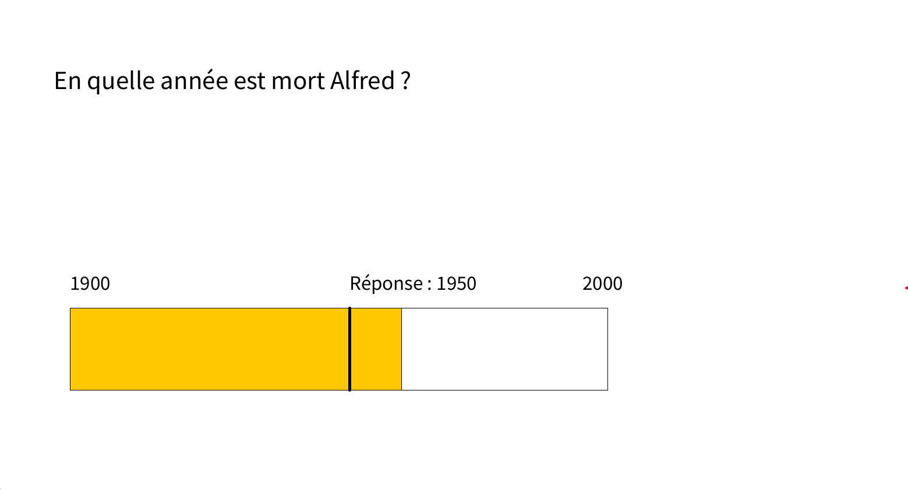
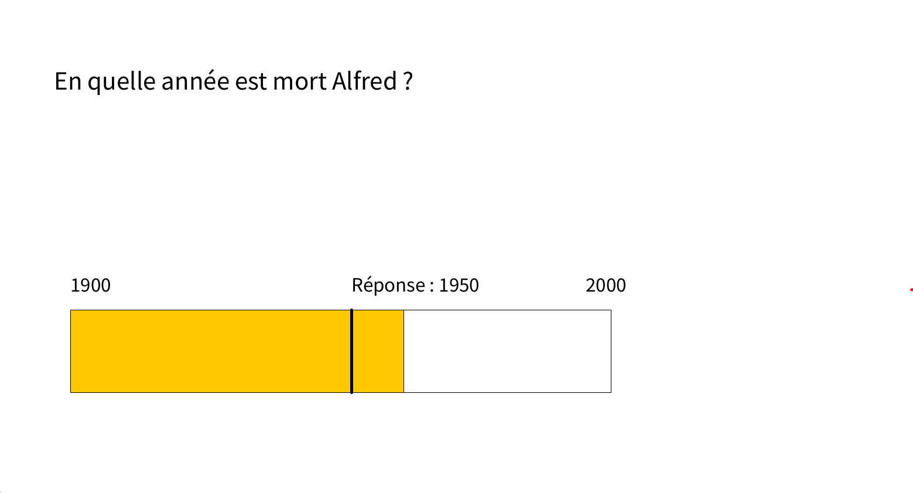

Quiz
 

Avec deux collèges nous avons fait crée un quiz qui avec 3 parties avec plusieurs modes et difficultés. J'ai fait le mode crazy de l'histoire qui consiste à mouvoir une frise chronologique et sélectionner l'endroit où on pense être la bonne date qui répond à la question. Je me suis également occupé de toute la partie musique qui grâce à la bibliothèque Sounde j'ai créé un tableau de chanson qui nous servira pour lancer la changer mais également vérifier la bonne réponse du joueur. Elle a trois difficultés, les difficultés se jouent sur le nombre de secondes qui passe de la musique (facile : 15, intermédiaire : 10 et difficile 5). Ce projet à durer une semaine et j'ai pu apprendre à utiliser une nouvelle librairie et également à mieux gérer mon temps.